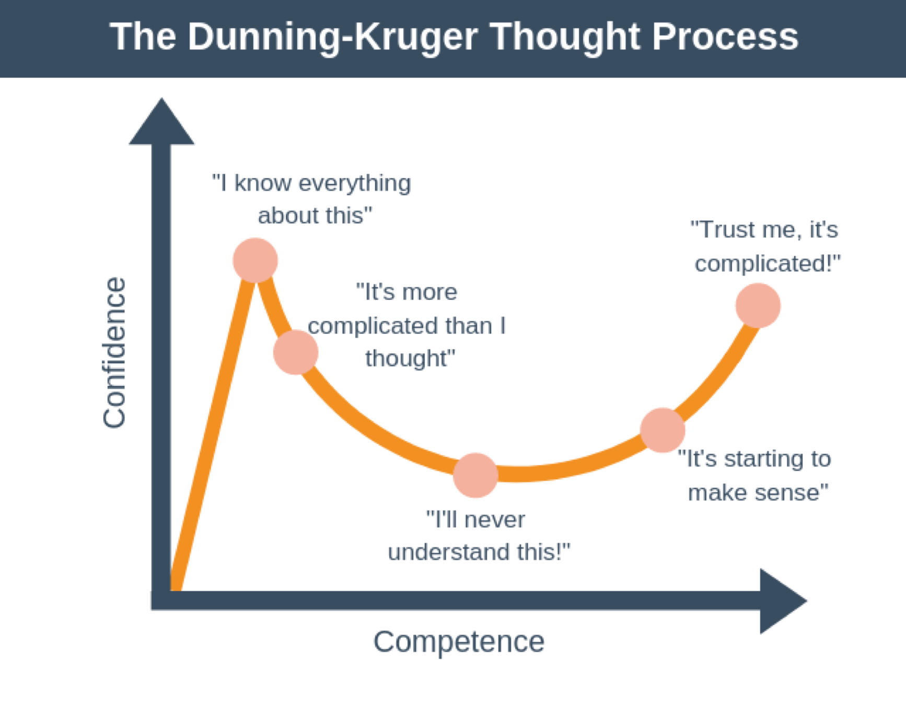
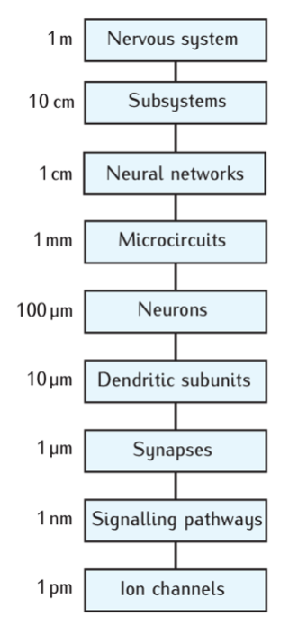
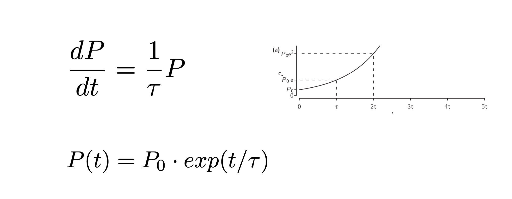

What is computational neuroscience?
Contents
1. What is computational neuroscience?#
The question is similar to asking “What is neuroscience?”. This question can be answered as something like, “the scientific study of the nervous system” Wikipedia. However, neuroscience is many things. It is multidisciplinary with many branches. Similarly, computational neuroscience is multidisciplinary. It is a subset of branches within neuroscience. Wikipedia defines it in the following way:
Wikipedia: Computational Neuroscience:
Computational neuroscience (also known as theoretical neuroscience or mathematical neuroscience) is a branch of neuroscience which employs mathematical models, theoretical analysis and abstractions of the brain to understand the principles that govern the development, structure, physiology and cognitive abilities of the nervous system.
Computational neuroscience employs computational simulations to validate and solve mathematical models, and so can be seen as a sub-field of theoretical neuroscience; however, the two fields are often synonymous. The term mathematical neuroscience is also used sometimes, to stress the quantitative nature of the field.
Goal is to achieve and abstraction and understanding of neural systems: Ie. Develop a theory and understanding. Another aspect to mention is the prominent role of quantitative data analysis in neuroscience, which often go hand in hand with computational neuroscience.
Let us start out by discussing the role of scientific theories in neuroscience. But what is a “theory”?
1.1. A scientific theory?#
The word “theory” has more than one meaning. How do we define A theory? First, it can mean a supposition or a system of ideas intended to explain something, especially one based on general principles independent of the thing to be explained. Examples are Darwin’s theory of evolution (Darwinism) or Newton’s Theory of gravity. Second, a set of principles on which the practice of an activity is based: “a theory of education” and “music theory”. Third, an idea used to account for a situation or justify a course of action: “my theory would be that the place has been seriously mismanaged”. The latter is closest what is often associated with a scientific theory. It can explain an observation and it can be rejected if it is wrong.
1.1.1. A hypothesis: A theory should contain a set of hypothesis (or generate hypotheses)#
A proposed explanation made on the basis of limited evidence as a starting point for further investigation. In mathematics we prove theorems, in science we reject hypothesis. We can have hypothesis without a theory, but not vice versa. These ideas are based on the science philosopher Karl Popper, who proposed that the scientific method should consist of empirical falsification of hypotheses, i.e. rejection of hypotheses, rather than proving theories.
1.1.2. Theory and models#
1.1.2.1. A model is an implementation of a theory. If can also be a realization of an aspect of the theory.#

A realisation of a theory in the shape of a model is important, because it can test the validity of both the model and the theory. An experiment can be conducted to verify the model and compare with another realisation. Hence, experiments or a computer simulation can reject one model and favor another model. This will help refining the theory (red arrows, figure ?)

1.1.3. Why is modelling important?#
Aid in reasoning. Some phenomena can only be found when doing modeling. Especially in systems with many interacting parts (complex systems) and experiments only provide partial information.
Remove ambiguities - sharpening the theory - intuition may turn out to be wrong. Also a theory may mean different things to different people. A good theory should leave nothing to be interpreted by the reader. This may, however, be practically difficult to fully fulfill.
Because experimental data is hard to get- models can replace it to some extent - and help develop a full understanding of a system. A good example is multi-compartmental models of neurons, which are now considered facts.
Computer power allows to quickly seek answers and effectively extend the range of experiments
Models can save time- rather than doing mindless experiments- especially important in the industry. Cohort size, medical dose, etc.
Inspiration for new experiments. Something doesn’t make sense, we need to develop a new theory/understanding. This is the essence of science!
Doing modelling also help us understand the often more complicated systems. It will help us move towards the right in the Dunning-Kruger plot. The Dunninger-Kruger plot, or the Dunninger-Kruger effect, is a hypothetical cognitive bias stating that people with low ability at a certain task often over-estimate their ability. The more we work with a system, the better we understand it. Having a computational model for a system, will help establishing a frame for how to understand it, even if it is not a perfect model.

1.1.4. Chosing and shaping a model#
Some of the issues to consider when chosing is the following:
What type of model?
What part of the system?
How to deal with the parameters, which are not known from experiments?
What assumptions are “reasonable”? What is biologically plausible?
Considering the scale of the system of interest may help shape the model and reduce the complexity. It may also help connecting it to the rest of the system.
1.2. Scale of a system#
The biological processes that make up an organism occur on various scales. Often a process on of a certain scale can be understood independently of the process on higher of lower scales. This could for instance be the molecular machinery of synapses. The fusion of the vesicle and the synaptic exocytose is a complicated process. Nevertheless, understanding the rich complexity of this process is not necessary for understanding how neuronal microcircuits work, for instance. Modelling often only works on one scale and it is difficult to connect models on one scale with a different. This is a challenge in neuroscience.

A clear challenge in neuroscience is a comprehensive mapping the connections between neurons. The research field of mapping the connections is called “connectomics”. The challenge consists of one one hand it is required to image on a microscopic scale that is fine enought to confirm that there is a synaptic contact between two cells. On the other hand, the axons can travel over distances, which are many orders of magnitude hight than the scale of synaptic contacts.

Wikipedia: Connectomics:
Connectomics is the production and study of connectomes: comprehensive maps of connections within an organism's nervous system
An example of the mixture of scales, which is required in mapping connections can be found in a recent study using rhesus monkey (Xu et al 2021).
1.3. Bridging scales has a caveat: Reductionism#
There is a prevalent, but simplistic belief in neuroscience that behavior of the organism can be explained or ascribed to a certain cell type. “Cell type x is responsible for behavior y”. Behavior could even be ascribed to a certain ion channel protein or gene, which has been investigated by instance come from genetic knock-out. This of course a strong simplification, since it would require explaining a phenomenon (behavior) which is the outcome at the highest scale in the system (nervous system). It is rare that a single constituent on the lowest scale (molecules) can be directly linked to the highest scale (behavoir). To read more about these caveat see Krakauer.


1.4. Level of details when building a model#
When building a model we are faced with a dilemma. How much of the experimental observations should we include in the model? There is certainly a temptation to include many experimental observations, especially if they have been difficult to obtain. There is also a common belief in neuroscience that the more details there are included in a model, the better that model is. Nevertheless, bringing in more details also make a model more difficult to understand. If the model has a certain behavior, it is more difficult to disentangle this behavoir and identify the critical components in the model, which is responsible for the behavior. For this reason, it is beneficial to start with a very simple model, and if need be, gradually include more details. It is also important not to include experimental observations, when the importance of of these is unknown. Bringin in an arbitrary observation, while not knowning the significance of this obsertation, is likely to introduce a bias. This could for instance be a conncetion in a network model, while not knowing what other connections are not included. Hence, this single connection will have arbitrary weight, while other connections could be much more important. In physics, it is a virtue to make a model as simple as possible, to better be able to pinpoint the mechanisms.
“Make everything as simple as possible -but not simpler!” -A. Einstein
1.5. Extreme Cases: the Blue brain project.#
The Blue brain project is a model of the mouse neocortex Markram et al 2015 with the goal of including as many biological details to make a simulation in order to be able to make model experiments as a complementary approach to biological experiments. This project has gotten much criticism, among other things for the enormous amount of details that require many assumptions, which are difficult to verify.
1.6. Purpose of a model?#
A model is a simplification of a sysetem for the purpose of grasping the essence of that system. But a system may be complex and multifaceted, hence a simplification may only be appropriate and useful for one aspect, whereas in other aspects other types of simplifications may better serve the purpose. A useful analogy is a map of a city or a country. Do we want a lot of details or do we want more general lines? It depends on the purpose of reading the map. In some cases we do not want details, if for example, we just want to travel on a highway from one big city to another. In other cases, we want details, if we are to find a specific location. If we want to understand a specific aspect of a system we should include enough details to explain that phenomenon, and preferably not have more details than that. In general, what distinguishes a good model from a bad one? Let us list the virtues.
1.7. Virtues of a theory#
As aluded to in the above section, one of the virtues of a good model is to make is as simple as possible, but not so simple that it does not capture the phenomenon intended to reproduce. The argument is that the more details that are put into a model, the more assumption it will require, and these assumptions are often unfournded. That is the first virtue.
Simplicity – yet still able to explain a phenomenon.
Occam’s razor “Law or parsimony”
Predictive power – The power of scientific theory is the potential to generate testable predictions)
Falsifiable/well-defined (no black boxes e.g.) to avoid the “Not even wrong!” By Wolfgang Pauli
Biologically plausible (albeit a flexible concept…)
THis list is inspired by Thoms Kuhn. Collectively
1.8. How to handle free parameters#
Optimizing using some algorithm to find the parameters that results in a best match between model and data. This can also provide predictions to be tested experimentally. But…. Parameter space can be really big Sensitivity analysis- Varying the parameters how sensitive is the conclusions to the choice of parameters? Application of general constraints is often helpful, but include increasing the number of assumptions Educated guesswork: Most of the time a reasonable guess inspired by experiments will do.
1.9. Example from invertabrate neuroscience: Prinz, Bucher and Marder’s observation#
Astrid Prinz, Dirk Bucher, and Eve Marder asked how many ways the free parameters could generate the same or similar motor output. How tightly does parameters have to be tunes to achieve a certain behavior? To answer this they did a modelling study where they systematically changed the parameters in their model (Prinz et al 2004) and simulated more than 20 million versions of combinations of parameters. Surprising finding that: Many virtually indistinguishable network patterns can arise from widely disparate sets of underlying mechanisms, suggesting there could be substantial animal-to-animal variability.
1.10. David Marr’s level of analysis#
How to understand the brain.
Computational theory - What does the animal do? what is the goal of the computation, why is it appropriate, and what is the logic of the strategy by which it can be carried out?
Representation and algorithm - How can this computational theory be implemented? In particular, what is the representation for the input and output, and what is the algorithm for the transformation?
Hardware implementation - How can the representation and algorithm be realized physically?
1.11. Krakauer’s Warning of reductionism#
krakauer argues that there are more tools available now than ever, and therefore there is an epistemological bias towards Marr’s third level of analysis, which is the experimental manipulation aspect (Krakauer et al 2017). The example that is used (originally proposed by Marr), is the action of flying by a bird. The feathers have something to do with flying, but in order to understand this task we cannot only look at the feathers. Other animals can fly without feather, for instance, bats. The epistomologic bias comes from a view that technology can provide or induce the understanding. Krakauer and colleagues argues against this view (Krakauer et al 2017, Barack and Krakauer 2021 )

1.12. Some instructive models: Population dynamics#
Maltheus 1798 proposed a model of dynamics of the popoulation where the change in the population is proportional with the population at that time. This can be written as a first order ordinary differential equation. Solving this equation leads to exponential growth.

Half a century later, Verhulst (1845) proposed an addition to the equation, that represented the reduction in resources to the individual as the population growth. This term would be proportional with the population and detract from the growth of the population. THis impedes the growth so it is no longer “exponential”. Hence, this type of growth is known as “logistic” growth.

Some time later a new model was proposed, that involved the population dynamics of two species, that interact with each other, one being a predictor and one being the prey. It was deveoped almost simultaneously albeit independently, by Lotka and Volterra (1925-1926) and it is known as the Lotka-Volterra preditor-prey model (LV-model).

This is known as a coupled differential equation. There are terms in the equations, where N and P are multiplied with each other. For this reason, these differential equations are known as non-linear differential equations. Nonlinearity could also come from a variable being squared (as in the logistic equation). There is an important difference between nonlinear and linear differential equations. The nonlinear differential equations are often very difficult or even impossible to solve analytically. What we can do instead, is to make a computer solve the equations. This is known as “numerical integrations” of the equations. The basic idea of . THe most commonly used numerical method for solving differential equations is the Runge-Kutta methods. The idea is to take small time steps, in which we can consider the change (df/dt) to be constant. The smaller the time steps the better this assumption is.
When solving the Lotka-Volterra equations numerically, an interesting and unpredictable result came out. There was periodicity in the population. This is contrary to the exponential and logistic growth. They did not have any rhythmic variation. In the exercise we will look at these equations and try changing the parameters. THis will give us a good sense of how the model behave.
Now, where did the rhythm in the LV model come from, and why was it different than the other population models? The essential element for generating rhythms is the combination of positive and negative feedback. This is actually a fundamental mechinism is biology. If we look closely, all biological systems have these two elements. This is especially the case in neuroscience. Networks, for instance often has a combination of feedback excitation and inhibition. If we look at the neocortex, it has both excitatory and inhibitory feedback. This has been schematically suggested in the literature (reference)

The idea of considering the inhibitory and excitatory as two uniform populations that act as a unit was the foundation for understanding basic brain rhythms and EEG dynamics. Such rhythmic activity arises out of the a cortical network model proposed by Hugh R. Wilson and Jack Cowan in the 1970’ies, which was published in a seminal paper (Wilson and Cowan, 1972). Now this is known as the (Wilson-Cowan model)[https://en.wikipedia.org/wiki/Wilson–Cowan_model].
The Wilson-Cowan model have the same positive and negative feedback as the preditor-prey model has. It also has dynamics whis is similar under some circumstances. Below is shown the excittory and inhibitory population activity plotted against each other and the exctitatory population as a function of time. This is from their paper (Wilson and Cowan, 1972).

1.13. Linear system analysis#
Most dynamical models or systems is composed of a set of differential equations which are coupled. These are also often nonlinear and therefore difficult to understand and analyse. There is a trick that is helpful, though, and that is to linearize the system and see where the system is stable and unstable. Hence, we can treat the system as it is linear and use this as a guideline for how the nonlinear system behaves. Some of the concepts in this process is the following:
Phase portrait / State space / phase space : plotting variables against each other (as in the figure 11a above) thus making the time variable implicit.
Attractor: a set of points in phase space towards which trajoctories within a region will converge towards
Fixpoint: a point that work as an attractor
Limit circle: Circles in phase space, that work as an attractor
Nullclines: lines that indicate the direction of movement along an axis.
In this course we will use models and linear system analysis to get an understandong on how neural system work.